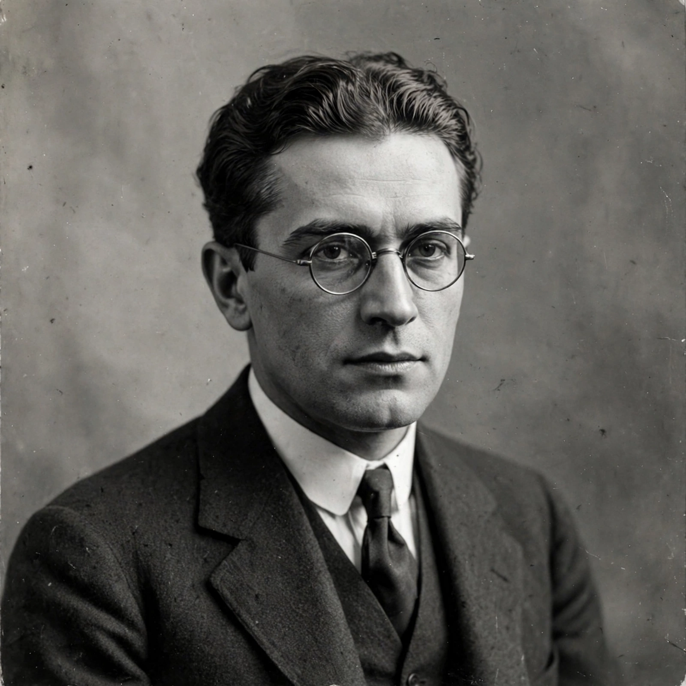

Alexander Alexandrovich Friedmann (also spelled Friedman; Russian: Александр Александрович Фридман; 16 June [O.S. 4 June] 1888 – 16 September 1925) was a Russian and Soviet physicist and mathematician. He is best known for his pioneering theory that the universe is expanding, formulated in a pair of papers of 1922 and 1924 that derived the Friedmann equations from Einstein's field equations of general relativity. His solutions, later developed independently by Georges Lemaître, underpin the modern FLRW model of cosmology and the Big Bang theory.
| Alexander Friedmann | |
|---|---|
 Friedmann in the 1920s. | |
| Born | 16 June 1888, Saint Petersburg, Russian Empire |
| Died | 16 September 1925 (aged 37), Leningrad, Soviet Union |
| Known for | Friedmann equations; expanding-universe cosmology |
| Fields | Physics, mathematics, meteorology, cosmology |
Friedmann was born in Saint Petersburg to a composer father of Czech descent and a pianist mother. He studied mathematics at Saint Petersburg State University, graduating in 1910, and worked on meteorology and the mathematics of fluid motion. During the First World War he served as an aviator and instructor; afterward he held posts in Perm and Petrograd, becoming director of the Main Geophysical Observatory in 1925. He was also an accomplished balloonist, reaching a record altitude of about 7,400 metres in July 1925. Two months later he died suddenly of typhoid fever, contracted, it is thought, on his honeymoon in Crimea.
In June 1922 Friedmann published in Zeitschrift für Physik the paper "On the Curvature of Space", showing that Einstein's equations admit dynamic solutions in which the radius of the universe grows or shrinks with time — for a universe of positive spatial curvature possibly cyclically. Einstein initially published a note claiming Friedmann had made an error, but withdrew it in 1923 after being shown the calculations. Friedmann's 1924 paper extended the analysis to negative curvature. His book The World as Space and Time (1923) presented the ideas to a broader audience. The work was largely overlooked until Lemaître's 1927 paper and Edwin Hubble's 1929 evidence of galactic recession made the expanding universe central to cosmology; the standard homogeneous, isotropic cosmological model is now called the Friedmann–Lemaître–Robertson–Walker (FLRW) metric.